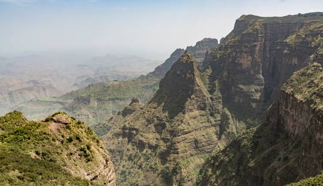

Ancient Heritage
As one of the world's oldest nations, Ethiopia is the cradle of humanity. It is home to Lucy, the 3.2 million-year-old hominid, and the stunning rock-hewn churches of Lalibela.

Welcome to a land where history isn't just found in books, but written in the very soil beneath your feet. Ethiopia is a vibrant tapestry of ancient civilizations, breathtaking landscapes, and a spirit of hospitality that dates back millennia. From the jagged peaks of the Simien Mountains to the sacred, rock-hewn churches of Lalibela, this is a country that defies expectations and rewards the curious. Whether you are here to trace the origins of humanity, savor the world’s finest coffee at its source, or immerse yourself in a culture that remained unyielding through the ages, we are thrilled to be your guide. welcome to Ethiopia!
As one of the world's oldest nations, Ethiopia is the cradle of humanity. It is home to Lucy, the 3.2 million-year-old hominid, and the stunning rock-hewn churches of Lalibela.
From the heights of the Simien Mountains to the volcanic craters of the Danakil Depression, Ethiopia offers some of the most unique geography on the African continent.
Experience the birthplace of coffee (locally known as Bunna
). Our vibrant culture is expressed through unique music, 13 months of sunshine, and unparalleled hospitality.
Ethiopia is often referred to as the "Cradle of Humanity." The discovery of the 3.2 million-year-old fossil "Lucy" (Dinknesh) in the Afar region proved that the roots of the human story are deeply embedded in Ethiopian soil. This ancient heritage set the stage for one of the most enduring cultures on Earth.
By the 1 st century AD, the Aksumite Empire rose to power, becoming one of the four great powers of the ancient world alongside Rome, Persia, andChina. Aksum was a major naval and trading power, famous for its massive monolithic obelisks (stelae) and for being one of the first empires to officially adopt Christianity in the 4th century.
The Persian philosopher Mani once ranked Aksum as one of the four greatest empires in the world, placing it in the same league as Rome, Persia, and China. It wasn't just a local power; it was a global influencer in trade, politics, and military strength.
Following the decline of Aksum, the center of power shifted south. During the Zagwe Dynasty in the 12th and 13th centuries, King Lalibela commissioned the construction of eleven magnificent rock-hewn churches. Carved directly into solid volcanic rock, these structures remain some of the greatest architectural feats in human history. Later, the Solomonic Dynasty established Gondar as a capital, known for its fairytale-like castles and he Camelot of Africa.
Ethiopia is famously the only African nation to have never been colonized. In 1896, under the leadership of Emperor Menelik II and Empress Taytu Betul , Ethiopian forces defeated the Italian army at the Battle of Adwa. This victory ensured Ethiopia's independence and made the country a beacon of hope and a symbol of pan-Africanism across the globe.
In the 20 th century, Emperor Haile Selassie I led the country through the challenges of the Italian occupation (1935–1941) and worked to modernize the nation, helping to found the Organization of African Unity (now the African Union), which remains headquartered in Addis Ababa today.
Ethiopia is the only nation in Africa that was never colonized, defending its sovereignty for millennia and serving as a symbol of independence for the entire continent.
The AU was founded in 2002.
Amharic code
ስልት እውታረግምግም() {
ተለዋ ብ = መፈተሻውሂብ.ርዝመት; ተለዋ መገምገሚያዝርዝር = []; ለዚህ (ተለዋ ለ = 0; ለ < ብ; ለ++) { ንብል ረድፍ = መፈተሻውሂብ[ለ]; ንብል ባህርይቅንት = ቁስ.ቁልፎች(ረድፍ).ክትፍ(0, 4).ውልጥ(ቁ => ተንሳፋፊትንትን(ረድፍ[ቁ])); ንብል ስያሜቅንት = ቁስ.ቁልፎች(ረድፍ).ክትፍ(4).ውልጥ(ቁ => ረድፍ[ቁ]); ንብል እርግጠኛዋጋ = ቁስ.ዋጋዎች(ስያሜቅንት)[0]; ንብል ትንበያዋጋ = ተንበይ(ባህርይቅንት); መገምገሚያዝርዝር.ገፋያድርግ({ "እርግጠኛዋጋ": እርግጠኛዋጋ, "ትንበያዋጋ": ትንበያዋጋ }); } }
| Dish | Region | Spice |
|---|---|---|
| injera | national | medium |
| Tibs | national | high |
| Kitfo | Gurage | high |